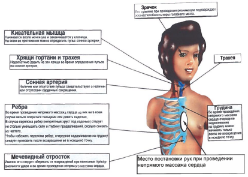

Билет №5
Вопрос 1. Перечень спецодежды, спецобуви и дополнительных СИЗ для слесарей КИПиА. (ИОТП-13-13, п.1.12.)
Ответ:
Работник должен пользоваться выданной спецодеждой, спецобувью, применять средства индивидуальной защиты, соответствующие характеру выполняемых работ.
В соответствии с действующим законодательством, Перечнем спецодежды, спецобуви и других средств индивидуальной защиты НГДУ «Талаканнефть» ОАО «Сургутнефтегаз», разработанным в соответствии с Типовыми нормами бесплатной выдачи спецодежды, спецобуви и других средств индивидуальной защиты работникам нефтяной промышленности, занятым на работах с вредными и (или) опасными условиями труда, а также на работах, выполняемых в особых температурных условиях или связанных с загрязнением, Коллективным договором, слесарю КИПиА выдается спецодежда, спецобувь и СИЗ согласно приложению к инструкции.
| Наименование специальной одежды, специальной обуви и других средств индивидуальной защиты. |
Срок носки (мес.) |
| Полупальто меховое крытое тканью |
48 |
| Футболка х/б с коротким рукавом |
2 на 24 |
| Футболка х/б с длинным рукавом |
2 на 24 |
| Перчатки диэлектрические |
до износа |
| Галоши диэлектрические |
до износа |
| Перчатки нейлон с рабочей поверхностью из полиуретана |
1 пара на 2 мес |
| Перчатки трикотажные с ПХВ |
1 пара на 1 мес |
| Перчатки "Восточные тигры" (в зимние месяцы) |
1 пара на 2 мес |
| Очки защитные"Uvех" 9168 |
до износа |
| Каска защитная |
24 |
| Подшлемник под каску |
до износа |
| Рукавицы меховые |
12 |
| Костюм мужской от общих производственных загрязнений |
2 на 24 |
| Кепка бейсболка |
12 |
| Плащ рабочий мужской из искусственной кожи |
24 |
| Ботинки мужские |
12 |
| Сапоги резиновые формовые |
12 |
| На наружных работах зимой дополнительно: |
| Костюм мужской для защиты от пониженных температур |
18 |
| Сапоги юфтевые меховые |
24 |
| Сапоги валяные с резиновым низом |
24 |
| Шапка-ушанка |
24 |
Вопрос 2. Что необходимо проверить перед работой с использованием паяльника. (ИОТВ-77-15, п.2.)
Ответ:
2.2.1. Для предупреждения работников о возможности поражения электрическим током на участках пайки паяльником должны быть вывешены предупредительные надписи, плакаты и знаки безопасности, а на полу положены деревянные решетки, покрытые диэлектрическими ковриками.
Проверить состояние паяльника:
паяльник должен проходить проверку и испытания в сроки и в объемах, установленных технической документацией на него;
проверить паяльник на соответствие классу защиты от поражения электрическим током;
проверить внешним осмотром техническое состояние кабеля и штепсельной вилки, целостность защитного кожуха и изоляции рукоятки.
Кабель паяльника должен быть защищен от случайного механического повреждения и соприкосновения с горячими деталями. Включить и проверить работу вентиляции.
2.2.2. Проверить наличие и исправность:
токоведущих частей электрической аппаратуры (кнопок и других частей);
заземляющих устройств;
средств пожаротушения.
освещенность рабочего места.
Вопрос 3. Требования охраны труда во время работы при обслуживании средств КИПиА объектов по подготовке и переработке нефти? (ИОТВ-11-15, п.3)
Ответ:
3.1. Способы и приемы безопасного выполнения работ, использования оборудования, транспортных средств, грузоподъемных механизмов, приспособлений и инструментов.
3.1.1. Все работы по техническому обслуживанию, ремонту, настройке средств автоматизации, установленных на технологическом оборудовании, а также работы, выполняемые на электрооборудовании, производятся согласно «Положения о границах эксплуатационной ответственности между подразделениями при техническом обслуживании средств КИПиА».
3.1.2. Слесарь КИПиА должен следить, чтобы места установки приборов имели достаточное освещение, приборы должны быть подписаны, двери щитовых помещений КИПиА должны быть закрыты на замки.
3.1.3. Все контрольно-измерительные приборы на объектах ЦПС, ПСП, УПБ и шламонакопитель должны быть исправны, оборудование, требующее поверки, калибровки должно иметь соответствующие клейма.
3.1.4. Все работы по техническому обслуживанию средств автоматизации во взрывозащищенном исполнении производятся согласно регламенту по обслуживанию взрывозащищенного электрооборудования.
3.1.5. Газоопасные работы проводятся после оформления наряда-допуска или записи в журнале газоопасных работ согласно утвержденному «Перечню газоопасных работ, проводимых на объектах НГДУ «Талаканнефть».
3.1.6. При проведении работ запрещено использовать открытый огонь.
3.1.7. При производстве работ в помещении где возможно возникновение взрывоопасных концентраций газа слесарь КИПиА обязан:
использовать только искробезопасный инструмент.
Запрещается:
использовать обувь с металлическими набойками;
одежду из синтетических материалов для предотвращения накопления статического электричества;
вскрывать крышки приборов до отключения питающего напряжения.
3.1.8. Ремонт и замена датчиков на движущихся механизмах должна осуществляться лишь после их полной остановки. С вывешивание плаката «Не включать, работают люди».
3.1.9. При производстве работ с электрическими приборами, осмотре пультов контроля и автоматики запрещается:
снимать предупредительные плакаты;
заходить за ограждения и места, ограниченные предупредительными плакатами;
касаться токоведущих частей;
устранять обнаруженные неисправности на токоведущих частях без отключения напряжения.
3.1.10. Запрещается включать в сеть приборы без установки заземления.
3.1.11. При демонтаже контрольно-измерительных приборов следует снять напряжение питания, проверить его отсутствие, отсоединить токоведущие провода, а затем заземляющий проводник.
3.2. Указания по безопасному содержанию рабочего места и порядку прекращения работ.
3.2.1. Работая на установке, в щитах, панелях операторных и блоках автоматики, а также с конкретными приборами и средствами КИПиА необходимо пользоваться утвержденными схемами, паспортами и инструкциями по монтажу и эксплуатации. Вносить в принципиальные схемы различные изменения без утверждения технического совета не допускается.
3.2.2. Работы в цепях управления и сигнализации должны производиться с применением мер предосторожности против ошибочного включения оборудования и только инструментом с изолированными рукоятками.
3.2.3. Перед каждым применением инструмент должен быть осмотрен. Изолирующие покрытия не должны иметь дефектов, которые приводят к ухудшению внешнего вида и снижению механической и электрической прочности, у отверток должен быть изолирован стержень.
3.2.4. Не допускается производить техническое обслуживание при неустойчивых или аварийных режимах работы оборудования, при продувке оборудования и трубопроводов.
3.2.5. При осмотре и ремонте средств КИПиА в местах с недостаточной освещенностью должны применяться переносные светильники только заводского изготовления.
3.3. Действия, направленные на предотвращение аварийных ситуаций.
3.3.1. Случаи срабатывания, а также неправильной работы и отказов схем должны анализироваться эксплуатационным персоналом совместно с технологическим персоналом цеха.
3.3.2. Слесарю КИПиА запрещается производить какие-либо изменения в конструкции взрывозащищенного электрооборудования, а также запускать его в эксплуатацию со снятыми или неисправными деталями взрывонепроницаемой оболочки.
3.3.3. Коммутационные переключения, включения, отключения приборов, схем управления, защиты и сигнализации, пуск, останов агрегатов, необходимые при наладке и проверке устройств, должны проводиться с уведомлением технологического персонала.
3.3.4. Для проверки приборов, завязанных в контурах регулирования технологических параметров, необходимо перевести регулятор в режим ручного управления, о чем предупредить оператора и согласовать с технологическим персоналом (начальником смены, начальником установки). По окончании проверки приборов, регулятор необходимо перевести в автоматический режим и доложить оператору, технологическому руководству (начальнику смены, установки) об окончании работ.
3.3.5. Действие схем автоматики или телемеханики с воздействием на исполнительные механизмы (пуск и останов технологического оборудования, закрытие и открытие кранов, задвижек и т.п.) необходимо проверять вместе с представителем персонала, обслуживающего оборудование.
3.3.6. Ремонт, снятие и установку приборов на работающих сосудах производить после стравливания давления в импульсных трубках и надежного отсечения их от сосуда.
3.3.7. При осмотре оборудования не разрешается производить переключения, снимать плакаты или знаки безопасности, ограждения и заземления, установленные при подготовке рабочего места, прикасаться к токоведущим частям, пусковым устройствам, закрывать и открывать вентили, проникать за временные и постоянные ограждения в электроустановках.
3.3.8. Замерзшие импульсные линии разрешается отогревать только горячей водой или паром.
3.3.9. Вентили, краны и клапаны должны быть в полной исправности и обеспечивать возможность быстрого и надежного перекрытия среды, заключенной в импульсных линиях.
3.3.10. Запрещается эксплуатировать КИПиА при рабочих нагрузках, давлениях и температурах, превышающих допустимые нормы, приведенные в паспорте.
3.3.11. Газоопасные работы, связанные с разгерметизацией оборудования, монтажом, демонтажем приборов контроля, регулирования и сигнализации технологических параметров, проводятся совместно с технологическим персоналом согласно требованиям инструкций по проведению газоопасных работ.
3.3.12. Необходимо избегать опасных зон вокруг предохранительных клапанов.
3.3.13. При обслуживании приборов, установленных на паропроводах, колонном оборудовании, печах принять меры, исключающие возможность ожога.
3.3.14. Запрещается загромождать материалами и другими предметами рабочие места, проходы, производственные помещения.
3.4. Требования, предъявляемые к использованию средств индивидуальной защиты работников.
При выполнении работ по обслуживанию средств автоматизации объектов по подготовке и переработке нефти следует применять следующие средства индивидуальной защиты:
спецодежду и спецобувь (без подков и гвоздей);
для защиты органов дыхания ПШ-1,ПШ-2 (при выполнении газоопасных работ);
для защиты головы каску защитную;
средства защиты рук от обморожения (в холодные периоды года);
средства защиты лица, глаз от механических воздействий и термических рисков электрической дуги;
средства защиты органов слуха (при проведении ТО, TP в машинных залах);
предохранительный пояс (при выполнении работ на высоте).
3.5. Порядок извещения непосредственного руководителя работ о недостатках, влияющих на безопасность труда, обнаруженных во время работы.
При выявлении недостатков влияющих на безопасность труда, обнаруженных во время работ, следует:
прекратить работы;
сообщить непосредственному руководителю работ;
принять меры к их устранению;
не приступать к работе до полного их устранения.
Вопрос 4. Назовите порядок оказания первой помощи при проникающем ранении груди, живота. (Инструкция для проведения обучения оказания первой помощи пострадавшим на производстве, п. 10-10.2.)
Ответ:
10. Правила оказания помощи в случаях ранения грудной клетки.
Внимание! Проникающее ранение грудной клетки приводит к попаданию воздуха в плевральную полость, что значительно ухудшает состояние раненого.
Правило первое.
Усадить пострадавшего и прижать ладонь к ране, закрыв в нее доступ воздуха.
Правило второе.
Наложить пластырь или скотч, чтобы избежать поступления воздуха в плевральную полость.
10.1. Правила оказания помощи при наличии в ране грудной клетки инородного предмета:
Правило первое.
Нельзя извлекать из раны инородные предметы.
Правило второе.
Зафиксировать предмет между двумя скатками бинта и прикрепить их лейкопластырем или скотчем к коже.
Внимание! Извлечение инородного предмета или холодного оружия из раны груди может привести к мгновенной смерти.
Если на место происшествия не могут прибыть спасательные службы, а из раны торчит длинный предмет? Осторожно перепилить предмет между кулаками помощника, фиксирующего его для уменьшения вибрации.
10.2. Правила оказания помощи в случаях ранения живота:
Правило первое.
Приподнять ноги и расстегнуть поясной ремень. Прикрыть содержимое раны чистой салфеткой.
Правило второе.
С помощью лейкопластыря закрепить салфетку, полностью прикрывающую края раны и приложить к животу холод.
Правило третье.
Нельзя предлагать обезболивающие и давать пить. Можно время от времени протирать губы мокрой ваткой или салфеткой.
Правило четвертое.
Нельзя вправлять выпавшие из раны внутренние органы. Выступающие из раны фрагменты внутренних органов следует накрыть чистой тканью.
Правило пятое.
Нельзя извлекать инородный предмет из раны (см. п.10.1).
Внимание! Использование холода уменьшает боль и страдание раненого, снижает скорость внутреннего кровотечения и значительно увеличивает шансы на спасение.
Вопрос 5. Классификация взрывоопасных зон. (ИОТВ-102, п.1.5-1.11.)
Ответ:
1.5. Взрывоопасная зона - помещение или ограниченное пространство в помещении или наружной установке, в котором имеются или могут образоваться взрывоопасные смеси.
1.6. Класс взрывоопасной зоны, в соответствии с которым производится выбор электрооборудования, определяется проектной организацией.
1.7. Взрывоопасные зоны нефтяной промышленности характеризуются, согласно ПУЭ, в основном четырьмя классами: B-l, B-Ia, B-I6 и В-1г.
1.8. Зоны класса В-I - зоны, расположенные в помещениях, в которых взрывоопасные смеси могут образоваться при нормальных недлительных режимах работы, например при загрузке или разгрузке технологических аппаратов, при хранении или переливании легковоспламеняющихся жидкостей, находящихся в открытых сосудах.
1.9. Зоны класса В-Iа - зоны, расположенные в помещениях, в которых при нормальной эксплуатации взрывоопасные смеси горючих газов или паров ЛВЖ с воздухом не образуются, а возможно только в результате аварий или неисправностей;
1.10. В класс B-Iб входят те же помещения, что и в класс B-Ia, но имеющие такие особенности:
горючие газы в этих зонах обладают высоким нижним концентрационным пределом воспламенения (15% и более) и резким запахом при предельно допустимых по санитарным нормам концентрациях;
образование в помещениях в аварийных случаях общей взрывоопасной концентрации по условиям технологического процесса исключается, возможна лишь местная взрывоопасная концентрация;
горючие газы и легковоспламеняющиеся жидкости имеются в помещениях в небольших количествах, не создающих общей взрывоопасной концентрации, и во время работы с ними не применяется открытое пламя; если работы на этих установках выполняются в вытяжных шкафах или под вытяжными зонами, эти установки относятся к невзрывоопасным.
1.11. Зоны класса В-Iг - пространства у наружных установок: технологических установок, содержащих горючие газы или ЛВЖ, надземных и подземных резервуаров ЛВЖ или горючими газами (газгольдеры), эстакад для слива и налива ЛВЖ, открытых нефтеловушек, прудов-отстойников с плавающей нефтяной плёнкой и т.п.
Вопрос 6. В каких случаях пострадавшему проводятся реанимационные мероприятия и как они выполняются (с отработкой практических навыков на тренажере). (Инструкция для проведения обучения оказания первой помощи пострадавшим на производстве, п. 4.2.-5.9.)
Ответ:
4.2 Последовательность действий при оказании первой медицинской помощи:
Такая очередность действий позволит сохранить жизнь пострадавшего до прибытия медицинских работников |
1. |
Нет сознания и нет пульса на сонной артерии (клиническая смерть) |
 |
Приступить к реанимации (см. п.5) |
2. |
Нет сознания, но есть пульс на сонной артерии (обморок или начало развития комы) |
 |
Попытаться привести пострадавшего в сознание (см. п.6)
Если в течени 3-4 минут это не удалось, обязательно повернуть его на живот (см. п.7) |
3. |
Обильное кровотечение |

|
Быстро пережать конечность выше раны и наложить жгут (см. п.9) |
4. |
Наличие раны |

|
Наложить стерильные повязки (см. п.10.3) |
5. |
Признаки перелома конечностей |

|
Наложить транспортную шину (см. п.11) |
5. Правила определения признаков клинической смерти:
Правило первое.
Чтобы сделать вывод о наступлении клинической смерти у неподвижно лежащего пострадавшего, достаточно убедиться в отсутствии сознания и пульса на сонной артерии.
Правило второе.
Не следует терять время на определение сознания путем ожидания ответов на вопросы: «Все ли у тебя в порядке? Можно ли приступить к оказанию помощи?». Надавливание на шею в области сонной артерии является сильным болевым раздражителем.
Правило третье.
Не следует терять время на определение признаков дыхания. Они трудноуловимы, и на их определение с помощью ворсинок ватки, зеркальца или наблюдения за движением грудной клетки можно потерять неоправданно много времени. Самостоятельное дыхание без пульса на сонной артерии продолжается не более минуты, а вдох искусственного дыхания взрослому человеку ни при каких обстоятельствах не может причинить вреда.
Если подтвердились признаки клинической смерти? Быстро освободить грудную клетку от одежды приступить к сердечно-легочной реанимации см. пп.5.5; 5.6.

5.1. Правила определения пульса на сонной артерии:
Правило первое.
Расположить четыре пальца на шее пострадавшего (см. п.5.4) и убедиться в отсутствии пульса на сонной артерии.
Правило второе.
Определять пульс следует не менее 10 секунд.
5.2. Правила освобождения грудной клетки от одежды для проведения реанимации:
Правило первое.
Расстегнуть пуговицы рубашки и освободить грудную клетку.
Правило второе.
Джемпер, свитер или водолазку приподнять и сдвинуть к шее.
Правило третье.
Майку, футболку или любое нательное белье из тонкой ткани можно не снимать. Но прежде чем наносить удар по грудине или приступать к непрямому массажу сердца, следует убедиться, что под тканью нет нательного крестика или кулона.
Правило четвертое.
Поясной ремень обязательно расстегнуть или ослабить. Известны случаи, когда во время проведения непрямого массажа сердца печень повреждалась о край жесткого ремня.

Внимание! Перед тем как приступить к реанимации, необходимо уложить пострадавшего на жесткую и ровную поверхность, освободить грудную клетку от одежды и определить анатомические ориентиры (см. п. 5.4).
5.3. Правила освобождения грудной клетки от одежды для проведения реанимации, в случаях, когда на женщине надет бюстгальтер - его надо сдвинуть ближе к шее.
5.4. Анатомические ориентиры, необходимые для проведения сердечно-легочной реанимации:

5.5. Правила проведения непрямого массажа сердца и безвентиляционной реанимации:
Правило первое.
Расположить основание правой ладони выше мечевидного отростка так, чтобы большой палец был направлен на подбородок или живот пострадавшего. Левую ладонь расположить на ладони правой руки.
Правило второе.
Переместить центр тяжести на грудину пострадавшего и проводить непрямой массаж сердца прямыми руками.
Правило третье.
Продавливать грудную клетку не менее чем на 3-5 см с частотой не реже 60 раз в минуту.
Правило четвертое.
Каждое следующее надавливание начинать только после того, как грудная клетка вернется в исходное положение.
Правило пятое.
Оптимальное соотношение надавливаний на грудную клетку и вдохов искусственной вентиляции легких - 30:2, независимо от количества участников реанимации.
Правило шестое.
По возможности приложить холод к голове.
 Внимание! При каждом надавливании на грудную клетку происходит активный выдох, а при ее возвращении в исходное положение — пассивный вдох. Когда выделения
изо рта пострадавшего представляют угрозу для здоровья спасающего, можно ограничиться проведением непрямого массажа сердца, т.е. безвентиляционным вариантом реанимации.
Внимание! При каждом надавливании на грудную клетку происходит активный выдох, а при ее возвращении в исходное положение — пассивный вдох. Когда выделения
изо рта пострадавшего представляют угрозу для здоровья спасающего, можно ограничиться проведением непрямого массажа сердца, т.е. безвентиляционным вариантом реанимации.
Внимание! Чтобы непрямой массаж сердца был эффективным, его необходимо проводить на ровной жесткой поверхности.
Если под ладонью появился неприятный хруст (признак перелома ребер)? Уменьшить не глубину и силу, а ритм надавливаний и ни в коем случае не прекращать непрямой массаж сердца.
5.6. Правила проведения вдоха искусственной вентиляции легких (далее - ИВЛ) способом «изо рта в рот»:
Правило первое.
Правой рукой обхватить подбородок так, чтобы пальцы, расположенные на нижней челюсти и щеках пострадавшего, смогли разжать и раздвинуть его губы.
Правило второе.
Левой рукой зажать нос.
Правило третье.
Запрокинуть голову пострадавшего и удерживать ее в таком положении до окончания проведения вдоха.
Правило четвертое.
Плотно прижаться губами к губам пострадавшего и сделать в него максимальный выдох. Если во время проведения вдоха ИВЛ пальцы правой руки почувствуют раздувание щек, можно сделать безошибочный вывод о неэффективности попытки вдоха.
Правило пятое.
Если первая попытка вдоха ИВЛ оказалась неудачной, следует увеличить угол запрокидывания головы и сделать повторную попытку.
Правило шестое.
Если вторая попытка вдоха ИВЛ оказалась неудачной, то необходимо сделать 30 надавливаний на грудину, повернуть пострадавшего на живот, очистить пальцами ротовую полость и только затем сделать вдох ИВЛ.

Внимание! Нет необходимости разжимать челюсти пострадавшего, так как зубы не препятствуют прохождению воздуха. Достаточно разжать только губы.
Если невозможно преодолеть чувство брезгливости или выделения изо рта пострадавшего представляют угрозу для здоровья спасателя? Следует использовать специальную пластиковую маску для проведения ИВЛ способом «изо рта в рот».
5.6.1. Правила использования защитной маски для безопасного проведения ИВЛ:
Внимание! Когда контакт с выделениями из ротовой полости пострадавшего представляет угрозу инфицирования, отравления ядовитыми газами, искусственное дыхание можно проводить только через специальную защитную маску.
Правило первое.
Правильно взять маску в правую руку. Захватить ее пальцами правой руки так, чтобы большая часть ладони осталась свободной.
Правило второе.
Свободной частью ладони обхватить подбородок. Придерживая пальцами маску на лице, запрокинуть голову пострадавшего.
Правило третье.
Левой рукой прижать маску к лицу.
Правило четвертое.
Прижаться губами к отверстию с защитным клапаном и сделать в него выдох.
 Когда проведение ИВЛ «изо рта в рот» представляет угрозу для здоровья спасателя, а защитной маски нет? Проводить непрямой массаж сердца - безвентиляционную реанимацию (см. п.5.5) - до прибытия медицинского персонала или появления защитной маски.
Когда проведение ИВЛ «изо рта в рот» представляет угрозу для здоровья спасателя, а защитной маски нет? Проводить непрямой массаж сердца - безвентиляционную реанимацию (см. п.5.5) - до прибытия медицинского персонала или появления защитной маски.
5.7. Правила проведения реанимации более 10-15 минут:
Внимание! Мужчина со средними физическими данными может проводить комплекс сердечно-легочной реанимации не более 3-4 минут. Вдвоем с помощником - не более 10 минут. Втроем — с лицами любого пола, возраста и физических данных - более часа.
Правило первое.
Первый участник делает вдох искусственного дыхания. Контролирует реакцию зрачков и пульс на сонной артерии и информирует партнеров о состоянии пострадавшего: «Есть реакция зрачков!» или «Есть пульс!» и т.п.
Правило второе.
Второй участник проводит непрямой массаж сердца и отдает команду: «Вдох!». Контролирует эффективность вдоха искусственного дыхания по подъему грудной клетки и констатирует: «Вдох прошел!» или «Нет вдоха!».
Правило третье.
Третий участник приподнимает ноги пострадавшего для улучшения притока крови к сердцу. Восстанавливает силы и готовится сменить второго участника. Координирует действия.
Правило четвертое.
Через каждые 2-3 минуты реанимации обязательно производится смена участников и проверяется наличие самостоятельного пульса.
Правило пятое.
По возможности приложить холод к голове пострадавшего.
 5.8. Правила расположения участников реанимации:
5.8. Правила расположения участников реанимации:
Внимание! Такое расположение участников позволяет:
избегать столкновений головами;
рационально использовать силы (физически слабого участника следует чаще располагать в ногах пострадавшего, но при этом он должен координировать действия всей команды);
привлечь к реанимации любого необученного человека.

Сначала новичку следует доверить поддерживание ног, а затем задействовать в проведении реанимации.
5.9. Правила проведения реанимации в ограниченном пространстве:
Правило первое.
Комплекс реанимации можно проводить только в положении пострадавшего лежа на спине, на ровной жесткой поверхности.
Правило второе.
Обеспечить возможность запрокидывания головы пострадавшего для проведения ИВЛ.
Вопрос 7. Техническое обслуживание установок пожарной автоматики. Периодичность, типовые операции, регламентирующие документы, оформление документации. (Положение о техническом обслуживании и текущем ремонте средств автоматизации и телемеханизации, контрольно-измерительных приборов, СТО 232-2008,ПИ-74-15, ПИ-75-13, ПИ-156-15,ПИ-238-15, ПИ-503-14, ПИ-504-14).
Ответ:
Вопрос 8. Проверка средств сигнализации, противоаварийных защит и блокировок на узлах водоподготовки с артезианскими скважинами, канализационных очистных станциях. Периодичность, типовые операции, регламентирующие документы, оформление документации. (Положение о техническом обслуживании и текущем ремонте средств автоматизации телемеханизации, контрольно-измерительных приборов, СТО-36-2007, ПИ-99-13).
Ответ:
Предыдущий билет
Вернуться в раздел
Следующий билет